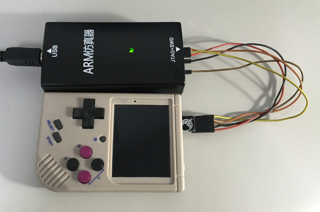
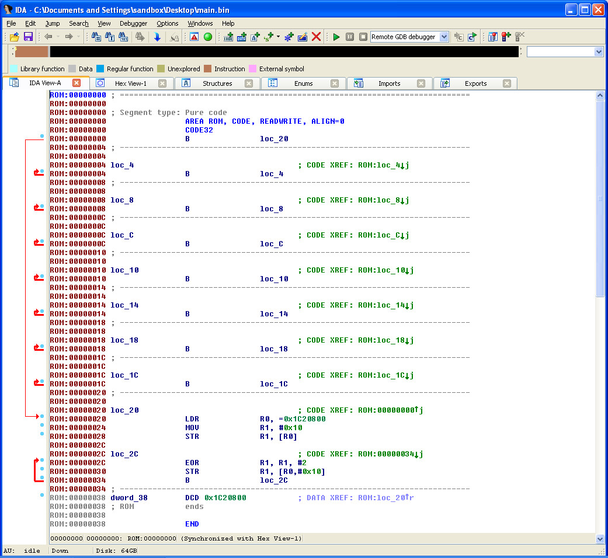
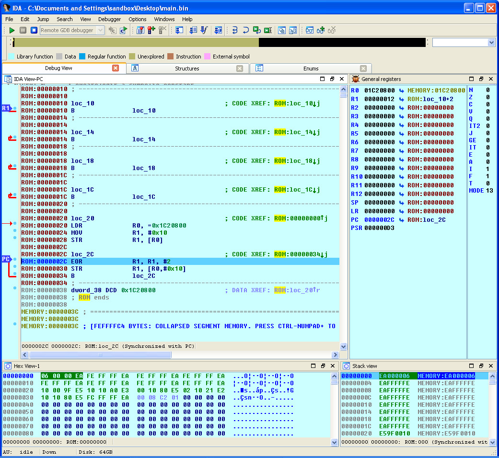

Steward
分享是一種喜悅、更是一種幸福
掌機 - Miyoo - 如何使用J-Link GDB Server和IDA Pro除錯程式
參考資訊：
https://whycan.com/t_1003.html
https://whycan.com/t_2025.html
https://whycan.com/files/members/3/TF_SDNAND_JTAG_V002.pdf
https://github.com/nminaylov/F1C100s_info/blob/master/JTAG/allwinner_f1c100s.cfg
F1C100S JTAG腳位(和MicroSD共用腳位)
| TMS | PF0, SDC0_D1 |
|---|---|
| TDI | PF1, SDC0_D0 |
| TDO | PF3, SDC0_CMD |
| TCK | PF5, SDC0_D2 |
連接J-Link

main.s
.global _start
.equiv GPIO_BASE, 0x01c20800
.equiv PA, (0 * 0x24)
.equiv PORT_CFG0, 0x00
.equiv PORT_DATA, 0x10
.arm
.text
_start:
b reset
b .
b .
b .
b .
b .
b .
b .
reset:
ldr r0, =GPIO_BASE
ldr r1, =0x10
str r1, [r0, #(PA + PORT_CFG0)]
0:
eor r1, #0x02
str r1, [r0, #(PA + PORT_DATA)]
b 0b
.end
main.ld
MEMORY {
ram : ORIGIN = 0, LENGTH = 32K
}
SECTIONS {
text : {
*(.text*)
} > ram
}
編譯
$ arm-none-eabi-as -mcpu=arm9 -o main.o main.s $ arm-none-eabi-ld -T main.ld -o main.elf main.o $ arm-none-eabi-objcopy -O binary main.elf main.bin
下載程式到RAM(loadbin c:\main.bin 0)

開啟J-Link GDB Server(Init registers記得勾選)

選擇ARM9

Listening on TCP/IP port 2331

IDA Pro載入main.bin

按下F9，選擇Remote GDB debugger

按下F9，輸入localhost 2331

接著就可以開始除錯程式
